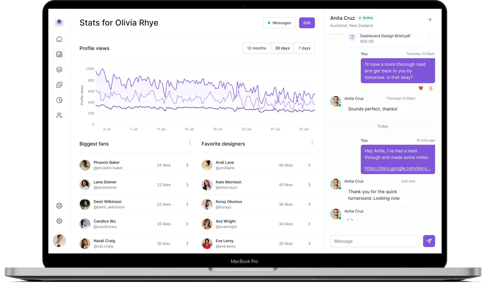

Aprende tecnología construyendo

En Conquer Academy encontrarás formación práctica para aprender desarrollo web, programación e inteligencia artificial y aplicar tus conocimientos en proyectos reales.
Quiénes somos
Somos una academia online que acerca la tecnología a quienes quieren iniciar o avanzar en su carrera digital. Aprendemos haciendo y compartimos el camino con una comunidad que acompaña cada paso.
Últimos cursos
-
Desarrollo web desde cero
Aprende a estructurar páginas web y descubre los fundamentos del desarrollo full stack.
-
Inteligencia artificial aplicada
Explora los fundamentos de la inteligencia artificial generativa y sus herramientas.
Últimas noticias
-
Ruta de aprendizaje para ser desarrollador full stack
Conoce las etapas y habilidades que forman parte del camino para convertirte en desarrollador full stack.
-
Qué es un desarrollador full stack
Descubre qué significa trabajar tanto en el frontend como en el backend de una aplicación web.